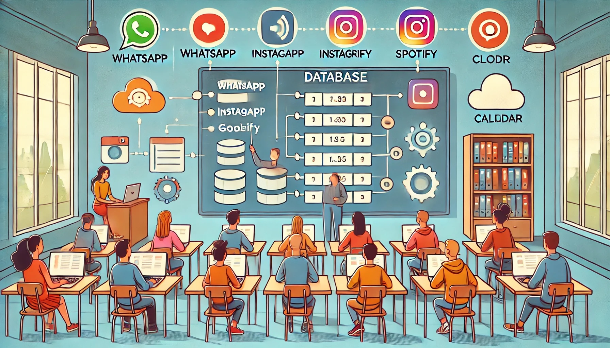

¿Qué es una base de datos? Introducción al proyecto
Índice
Objetivo

Iniciar al alumnado en el concepto de base de datos como sistema para almacenar y gestionar información. Comprender cómo este concepto se aplica a las aplicaciones web actuales y presentar el proyecto final que desarrollarán a lo largo de esta situación de aprendizaje.
Contenidos
1. Concepto de base de datos y su utilidad en la vida cotidiana
Una base de datos es un sistema que permite almacenar, organizar y gestionar información de forma estructurada. En lugar de guardar datos como listas en papel o notas desordenadas, una base de datos actúa como un archivo digital muy organizado, donde cada dato tiene su lugar y se puede recuperar fácilmente cuando se necesita.
La mayoría de las aplicaciones y servicios que usamos a diario utilizan bases de datos para funcionar. Por ejemplo:
- WhatsApp: guarda tus conversaciones, contactos, fotos y mensajes de voz.
- Spotify: almacena tus listas de reproducción, artistas favoritos y el historial de canciones escuchadas.
- Google Calendar: registra tus eventos, recordatorios y citas futuras.
- Instagram: guarda tus publicaciones, comentarios, "me gusta", y el número de seguidores.
En todos estos casos, los datos no se almacenan en tu móvil directamente, sino en bases de datos en la nube. Esto permite que puedas acceder a tu información desde cualquier dispositivo conectado a Internet, y que todo funcione de forma rápida, segura y automática.
En este proyecto vas a aprender a crear tu propia base de datos en la nube y a conectarla a una aplicación web que tú mismo programarás. Verás cómo puedes diseñar qué tipo de información guardar, cómo se guarda, y cómo mostrarla o modificarla desde una página web, como hacen las aplicaciones reales que usamos cada día.
2. Diferencias entre almacenar datos en un archivo y en una base de datos estructurada
Cuando guardamos información digital, existen distintas formas de hacerlo. Una de las más básicas es usar archivos, como un documento de texto o una hoja de cálculo. Sin embargo, cuando se necesita gestionar grandes cantidades de información de manera organizada, segura y eficiente, es mejor utilizar una base de datos estructurada.
A continuación, se muestran algunas diferencias clave:
| Archivos | Bases de datos estructuradas |
|---|---|
| Se almacenan como documentos independientes (.txt, .csv, .docx...) | Se organizan en tablas con campos y registros, como una hoja de cálculo muy avanzada |
| Para acceder a la información hay que leer todo el archivo | Permiten hacer búsquedas rápidas y filtrar datos fácilmente |
| No hay control sobre los datos repetidos o inconsistentes | Se pueden establecer reglas (tipos de datos, claves únicas) que evitan errores |
| Difícil de modificar desde una aplicación web | Se conectan fácilmente con aplicaciones web mediante APIs (una API es un conjunto de instrucciones que permite que una aplicación web pueda pedir datos o enviarlos a una base de datos de forma organizada) |
| Requiere mucha programación para acceder o modificar los datos | Los datos se gestionan mediante lenguajes como SQL o bibliotecas modernas como Axios, fetch, Firebase SDK o supabase-js, que facilitan la conexión con bases de datos desde JavaScript |
En resumen, los archivos son útiles para almacenar pequeñas cantidades de información de manera simple, pero si queremos que una aplicación web funcione como una herramienta real —por ejemplo, para guardar tareas, usuarios, productos o mensajes—, necesitamos usar una base de datos que permita un acceso rápido, seguro y organizado.
3. Elementos básicos de una base de datos: tabla, campos, registros
Para entender cómo funciona una base de datos, es importante conocer sus elementos fundamentales. La mayoría de las bases de datos que se usan en aplicaciones web están organizadas de forma estructurada, muy parecida a una hoja de cálculo. Esto significa que la información se guarda en forma de tablas, con filas y columnas.
- Tabla: Es el lugar donde se almacena un conjunto de datos relacionados. Por ejemplo, una base de datos de tareas puede tener una tabla llamada
tareas. Cada tabla se centra en un tipo de información. - Campo: Cada columna de una tabla representa un campo. Un campo define el tipo de información que se va a guardar. Por ejemplo, en la tabla
tareas, podríamos tener campos comotítulo,fechaoestado. - Registro: Cada fila de la tabla es un registro. Un registro representa una unidad completa de información. Por ejemplo, una tarea concreta con título “Estudiar”, fecha “2025-04-10” y estado “pendiente”.
Si pensamos en una hoja de cálculo:
- La hoja completa sería como una tabla.
- Las columnas serían los campos.
- Cada fila sería un registro con los datos concretos.
Las bases de datos también permiten definir tipos de datos para cada campo, como texto, número, fecha, o booleano (verdadero/falso). Esto ayuda a mantener la información ordenada y sin errores.
En este proyecto, tú mismo vas a diseñar tu tabla eligiendo qué campos necesitas para guardar los datos de tu aplicación (por ejemplo, libros, recetas, gastos...). Luego, desde tu página web, podrás insertar nuevos registros, ver los que ya tienes guardados, actualizarlos o eliminarlos.
4. Tipos de bases de datos: una visión general
Existen diferentes tipos de bases de datos, y no todas funcionan de la misma manera. Algunas se instalan en un ordenador concreto, otras están disponibles desde cualquier lugar a través de Internet. Algunas están organizadas en tablas y otras en estructuras más flexibles. A continuación, te presentamos una clasificación general para entender los principales tipos:
4.1. Según dónde se encuentran
- Locales: Se instalan y se usan en el propio ordenador. Solo se puede acceder a ellas desde ese dispositivo.
Ejemplo: Una base de datos hecha con Microsoft Access o con SQLite. - En la nube: Están alojadas en servidores de Internet. Se puede acceder a ellas desde cualquier dispositivo conectado a la red.
Ejemplo: Bases de datos ofrecidas por servicios como Supabase, Firebase, Google Cloud SQL, AWS RDS (Amazon), Microsoft Azure SQL, PlanetScale o MongoDB Atlas.
4.2. Según su estructura
- Relacionales: Están organizadas en tablas, con filas (registros) y columnas (campos). Las tablas pueden estar relacionadas entre sí. Es el modelo más clásico y utilizado.
Ejemplo: MySQL, PostgreSQL. - No relacionales (NoSQL): No usan tablas, sino otros formatos como documentos, pares clave-valor, colecciones o grafos. Son más flexibles y se adaptan a muchos tipos de datos.
Ejemplo: MongoDB, Firebase Realtime Database.
4.3. Según cómo se accede a ellas
- Con SQL: Se accede escribiendo instrucciones en un lenguaje especial llamado SQL (Structured Query Language).
Ejemplo:SELECT * FROM tareas WHERE completada = false; - Con APIs: Muchas bases de datos modernas permiten acceder a los datos desde aplicaciones web mediante APIs (interfaces que permiten enviar y recibir datos fácilmente). Esto se hace normalmente desde lenguajes como JavaScript.
Ejemplo: En este proyecto usaremos código en JavaScript que se conecta con la base de datos para guardar o consultar tareas.
No es necesario memorizar todos estos tipos, pero sí es importante saber que existen diferentes formas de organizar, almacenar y acceder a los datos, y que cada tipo de base de datos está pensado para una necesidad concreta.
Actividades
Actividad 1. ¿Dónde crees que se guardan tus datos?
Piensa en las aplicaciones que usas a diario: WhatsApp, Instagram, YouTube, Spotify… ¿Qué ocurre con tu información cuando cierras la app o cambias de móvil?
Instrucciones:
- Reflexiona de forma individual: ¿Dónde crees que se guardan tus mensajes, tus listas, tus fotos...?
- Comparte tu respuesta con el grupo en un breve debate dirigido por el profesor.
- Entre todos, intentaremos identificar qué datos usan estas apps y dónde podrían almacenarse.
Actividad 2. Archivos vs Bases de datos
Vamos a comparar dos formas distintas de guardar información digital: usando archivos o usando bases de datos.
Instrucciones:
- En parejas o pequeño grupo, imaginad que tenéis que guardar la lista de estudiantes de una clase, con sus nombres y notas.
- Comentad:
- ¿Cómo lo haríais con un archivo simple (.txt o .xlsx)?
- ¿Qué limitaciones tiene ese sistema?
- ¿Qué ventajas tendría una base de datos?
- Al final, se compartirán ideas en común para ver cómo encajan con lo trabajado en clase.
Actividad 3. ¿Sabes reconocer una tabla de base de datos?
Vamos a observar una tabla sencilla que podría formar parte de una base de datos de tareas.
| Título | Fecha | Completada |
|---|---|---|
| Estudiar base de datos | 2025-04-10 | No |
| Hacer tarea de programación | 2025-04-12 | Sí |
Instrucciones:
- Identifica:
- ¿Cuál sería el nombre de esta tabla?
- ¿Cuáles son los campos (columnas)?
- ¿Cuáles son los registros (filas)?
- Propón un campo nuevo que podría añadirse (por ejemplo, prioridad).
- Inventa un nuevo registro y compártelo con la clase o escríbelo en una plantilla digital si el profesor lo facilita.
Actividad 4. Demostración: aplicación de ejemplo – gestor de tareas
Antes de que pienses en qué aplicación quieres desarrollar tú, vas a ver una demostración en directo de una aplicación web que ya está funcionando. Esta aplicación será tu punto de partida: aprenderás cómo está hecha y la adaptarás a tu propio tema.
¿Qué hace esta app?
- Permite añadir nuevas tareas y guardarlas en una base de datos en la nube.
- Muestra una lista de tareas guardadas.
- Permite editar o eliminar cada tarea.
Observa atentamente:
- Cómo se actualiza la información al instante.
- Qué elementos se ven en la página: formulario, botones, lista de tareas.
- Qué tipo de datos se guardan: texto, fechas, opciones sí/no...
Opcional: El profesor puede mostrar también cómo se refleja todo esto en la base de datos, accediendo al panel de administración de Supabase.
Después de esta demostración, tú elegirás el tema sobre el que desarrollarás tu propia app, pero ahora ya sabrás qué tipo de funcionalidades puedes crear.
Actividad 5. ¿Qué app te gustaría crear?
Durante este proyecto, vas a desarrollar una aplicación web sencilla conectada a una base de datos. Pero el tema lo eliges tú.
Instrucciones:
- Piensa en qué tipo de información te gustaría guardar: tus películas favoritas, tus libros leídos, tus entrenamientos, tus gastos, tus recetas...
- Elige tres ideas posibles y selecciona la que más te motive para desarrollarla.
- Comparte tu idea con un compañero/a. Si el profesor lo indica, también puedes compartirla en voz alta o escribirla en una pizarra o documento compartido.
Obra publicada con Licencia Creative Commons Reconocimiento Compartir igual 4.0